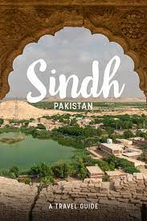

Land of Adventure and Nature: From the mighty stretches of the
Karakorams in the North to the vast alluvial delta of the Indus River in
the South, Pakistan remains a land of high adventure and nature.
Trekking, mountaineering, white water rafting, wild boar hunting,
mountain and desert jeep safaris, camel and yak safaris, trout fishing
and bird watching, are a few activities, which entice the adventure and
nature lovers to Pakistan.